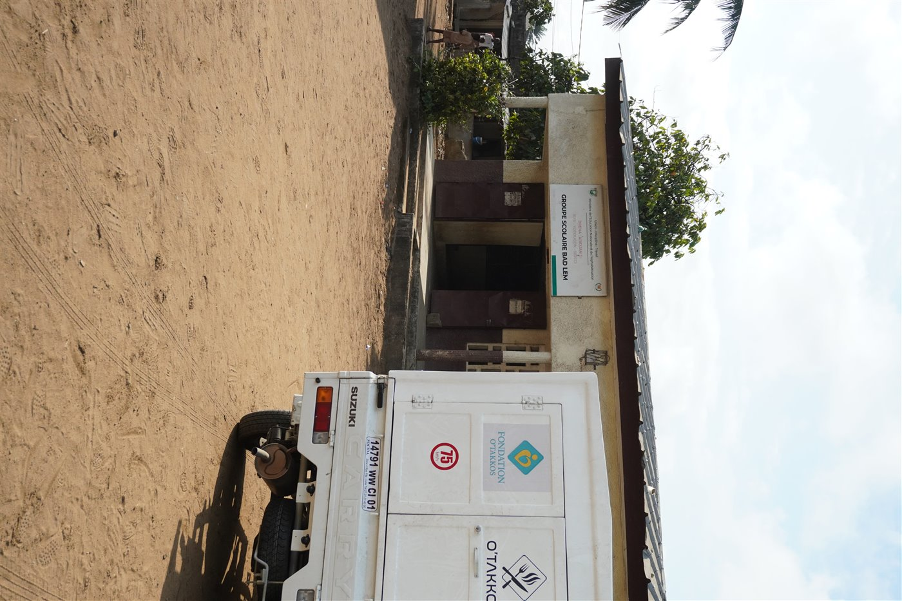
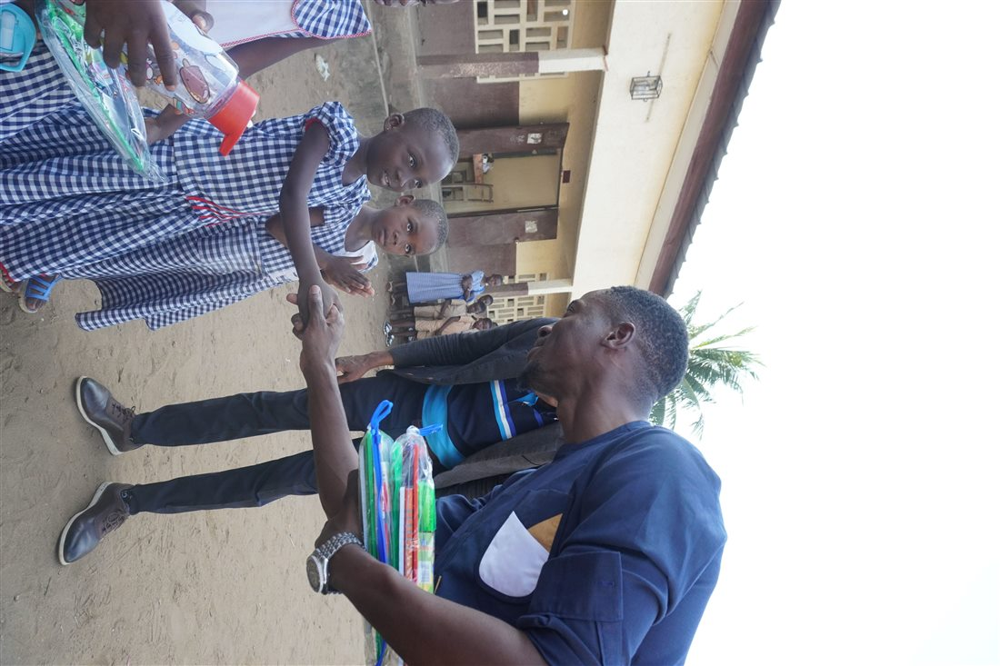
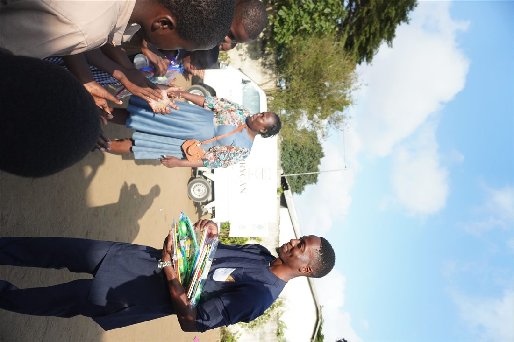
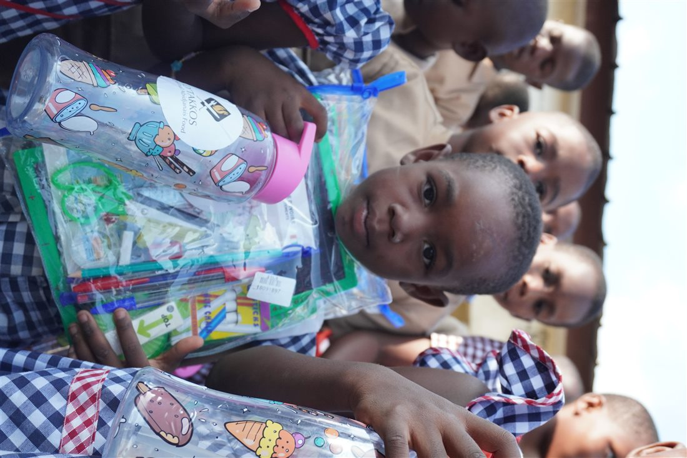
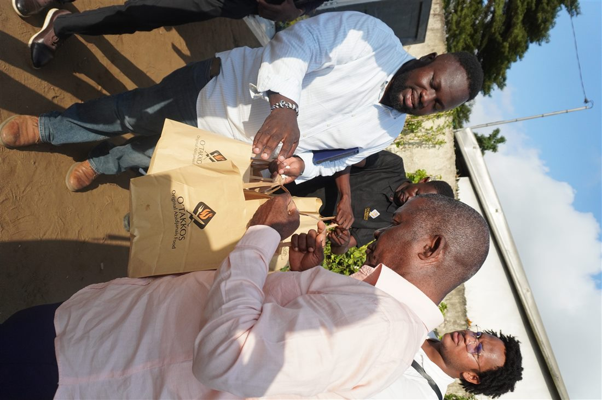
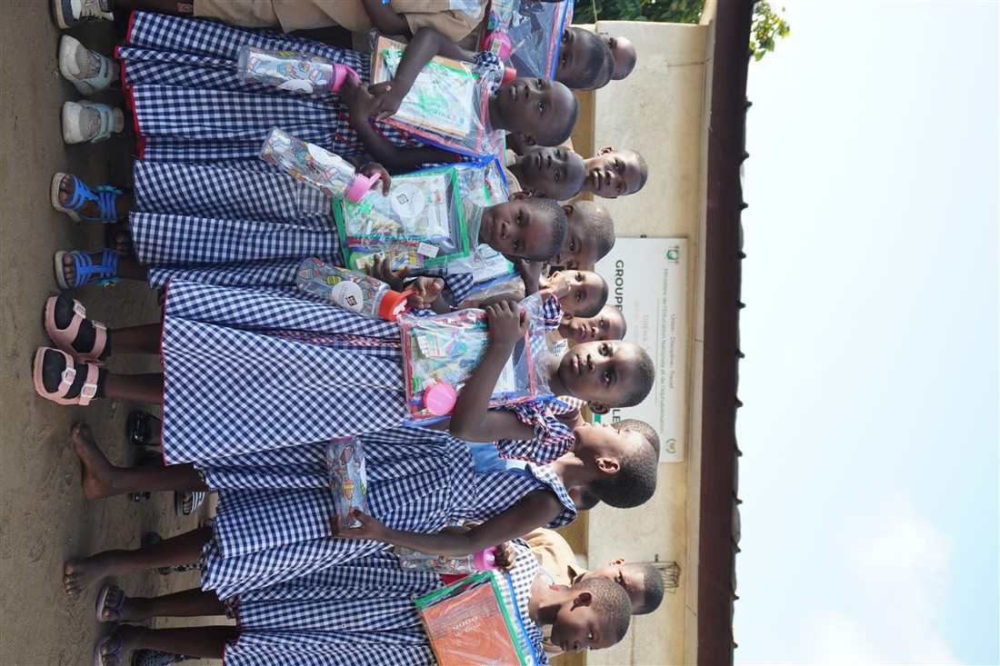
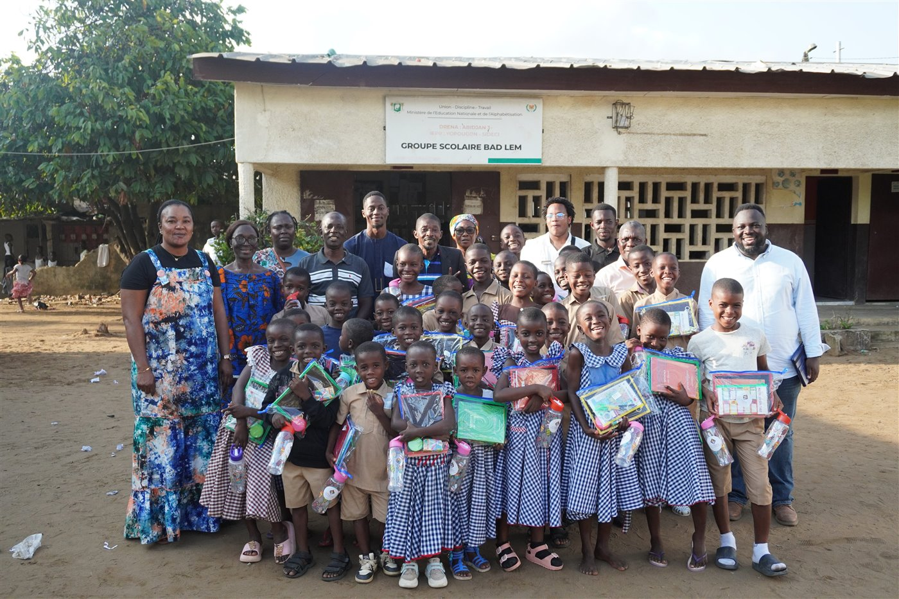

Fondation O'Takkos
Sous l'impulsion de Monsieur Joseph Raoul Eric, fondateur de O'Takkos, la Fondation O'Takkos porte une vision profondément humaine : transformer la réussite d'une marque ivoirienne en actions concrètes, utiles et proches des communautés.

Agir avec le cœur, rester proche du terrain
La Fondation O'Takkos est la branche humanitaire et sociale de notre célèbre chaîne de fast-food ivoirienne O'Takkos. Très ancrée localement, elle se distingue par des actions de solidarité inattendues, comme des dons surprises dans des écoles, renforçant sa proximité avec les habitants de la Côte d'Ivoire entière.
Nos œuvres caritatives
Des gestes simples, visibles et sincères, pensés pour encourager les enfants et soutenir les communautés qui font vivre la Côte d'Ivoire.






À travers ces actions, O'Takkos affirme qu'une entreprise locale peut aussi être une présence bienveillante : proche des familles, attentive à la jeunesse et fière de contribuer, à son niveau, au quotidien des communautés ivoiriennes.